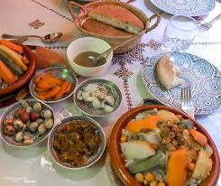

FES
Découvrez de magnifiques endroits à visiter dans la ville de Fes tels que l'université Al Quaraouiyine (en arabe : جامعة القرويين, français : Université Al Quaraouiyine) est une université située à Fès, au Maroc. Selon la tradition, sa construction débute en 859 sous le règne de la dynastie idrisside. Elle est considérée comme la plus ancienne université dans le monde encore en activité par l'UNESCO
Decouvrez la Medina qui regroupe plusieurs diversitée de personnes
. Il y'a aussi le lieu saint ou repose le fondateur de la Tariqa Tijani qui est très visiter par
Sa Médina fortifiée et chargée d’histoire en est la parfaite illustration. Inscrite au patrimoine mondial de l’Unesco depuis 1981, elle demeure l’une des plus somptueuses et des mieux préservée du monde arabe, accueillant les principales institutions culturelles de la ville.

Plongé dans l’ambiance de la médinanger une plat marocain rustique dans une gargote de rue est une expérience à ne manquer à Fès.